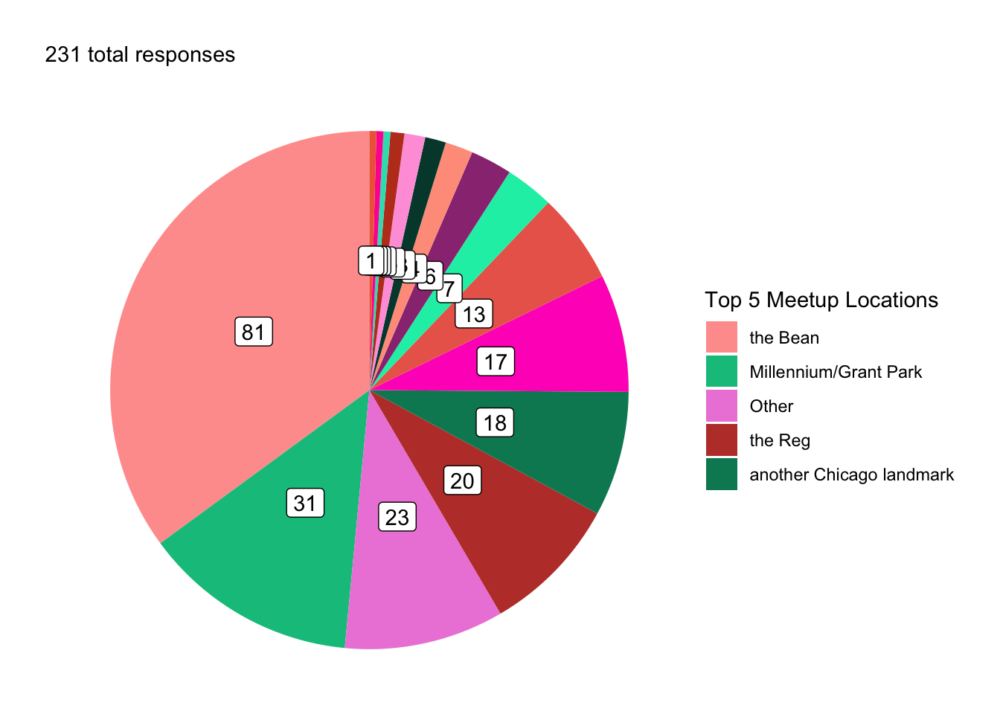
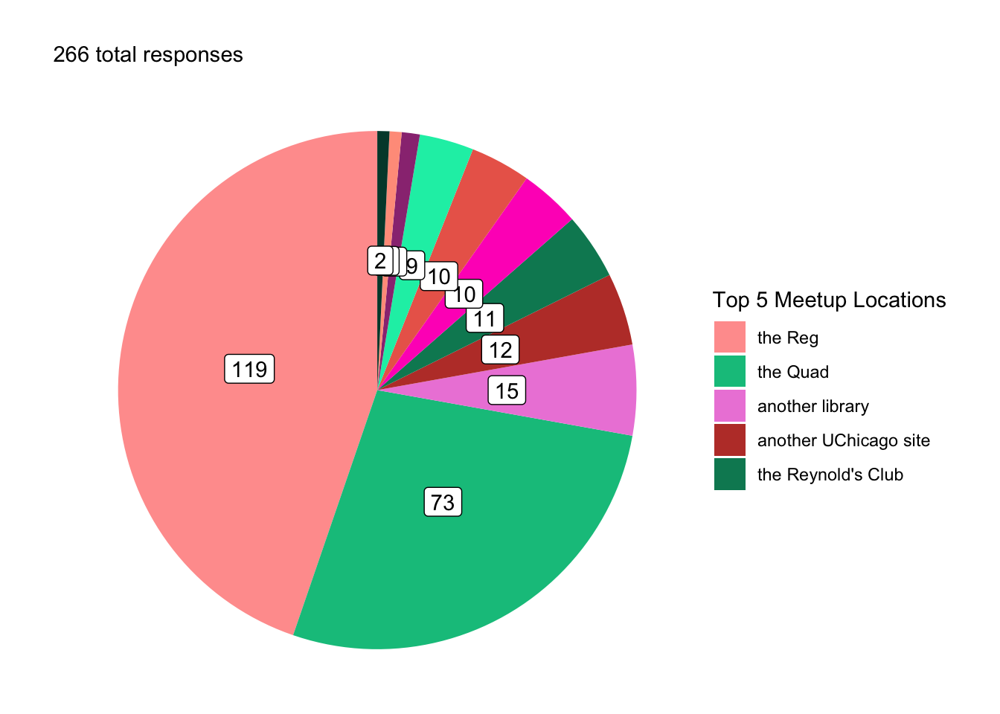
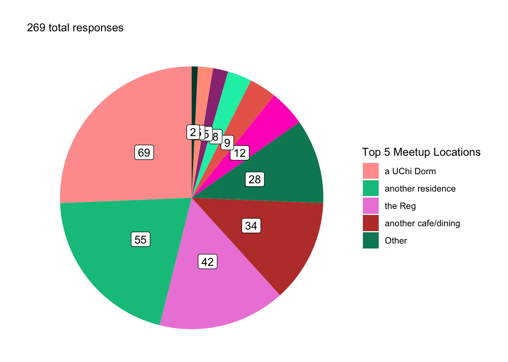
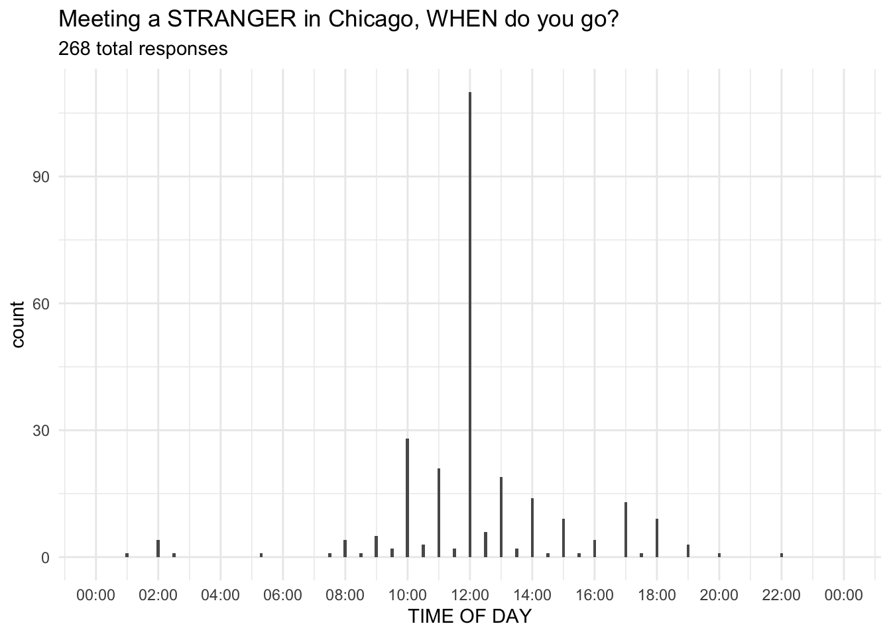
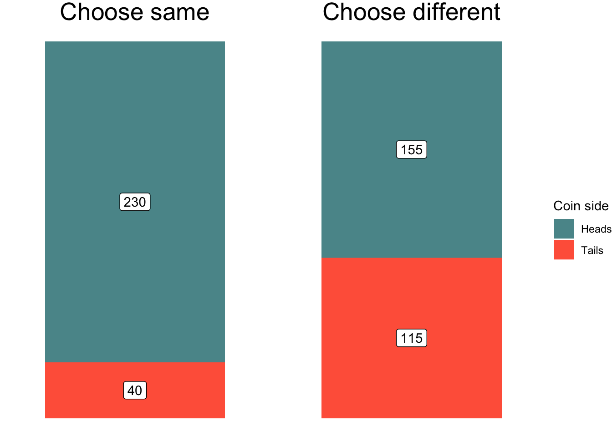
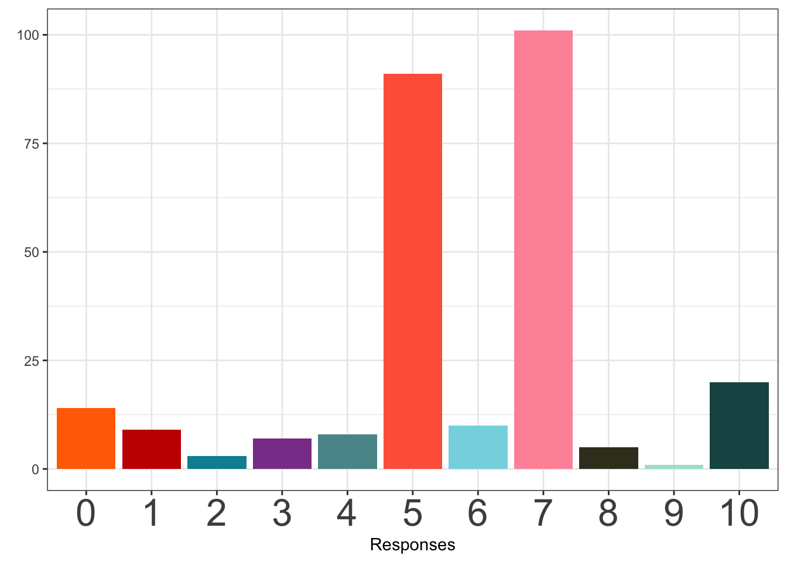
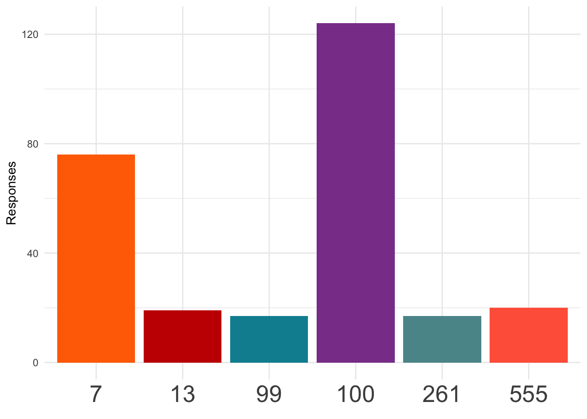
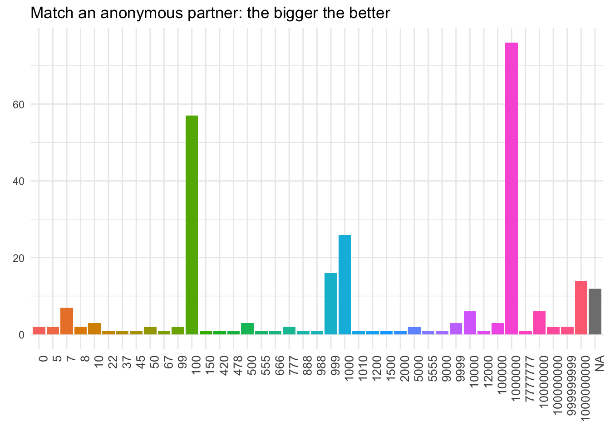

Schelling Games at UChicago
All Participants
Introduction
Thomas Schelling introduced the concept of “focal points” in The Strategy of Conflict with the intention of expanding the contemporary perspectives of game theory to include cooperative, not just competitive, games in human decision making (Schelling, 1960). Though his work certainly proved influential in this regard, concepts of focal points and coordination games have found relevance well beyond game theory and economics as a whole. From improvisational music (Canonne, 2018) to urban planning (Rondinelli, 1983), from human-computer interfacing (Wong et al., 2009) to linguistic anthropology (Brown & Levinson, 1987), from social stereotyping (Yoon & Hollingshead, 2010) to online gaming (Ross & Collister, 2014), elements of Schelling’s framework of coordinated decision-making seem ubiquitous.
We constructed a survey modeled after Schelling’s original report. Schelling himself did not perform a true “study” in reporting his results, but rather loosely surveyed the graduate students in his class at Yale in the 1950s (precise year unclear). Our data collection was similarly gathered quite loosely. The survey data were collected with the intention of serving a pedagogical purpose and with no intention to be published as rigorous study. While we cannot use these data to make empirical claims, they are nonetheless a useful and thought-provoking educational tool (as Schelling’s data certainly were).
Participants
This page reports responses from all participants.
You can also view responses from:
Data cleaning
Responses have been cleaned to account for predictable variations in how individuals input popular responses – e.g., “the reg”, “Regenstein”, and “In the Reg.” are all reported as “The Reg.” Ambiguous responses (e.g., “the library”) are left ambiguous. Responses that indicated clear misunderstanding of the question are excluded1 and some responses were coded as “Other” when necessary.2
Results
The survey results for each item are reported and visualized below. Some item-level visualizations use pie charts, which we recognize are anathema to many data visualization experts.3 Item-level summary statistics are also provided, and pie-chart-allergic readers may skip to the comparative bar charts.
Managing to meet
Where do you meet a total stranger in Chicago?
You are meeting a stranger in Chicago. You both know that you need to meet each other today, but you haven’t agreed on a place or a time and you have no means of communication. Where do you go to meet them?
The most common response for where to meet a stranger in Chicago was the Bean, with 80 responses (35.24%).
Common responses of Chicago landmarks included the Bean/Cloudgate (\(N\) = 80), Millennium/Grant Park (\(N\) = 31), and the Sears/Willis Tower (\(N\) = 6).
Response Breakdown (Cleaned)
| Response | N | Percent |
|---|---|---|
| the Bean | 80 | 35.24 |
| Millennium/Grant Park | 31 | 13.66 |
| Other | 21 | 9.25 |
| the Reg | 20 | 8.81 |
| another Chicago landmark | 18 | 7.93 |
| another cafe/dining | 17 | 7.49 |
| the Quad | 13 | 5.73 |
| a UChi Dorm | 7 | 3.08 |
| the Sears/Willis Tower | 6 | 2.64 |
| another library | 3 | 1.32 |
| another residence | 3 | 1.32 |
| another UChicago site | 3 | 1.32 |
| Ex Libris | 2 | 0.88 |
| a recent meeting location | 1 | 0.44 |
| Pret a Manger | 1 | 0.44 |
| the Reynold's Club | 1 | 0.44 |
Where do you meet an unknown student in Chicago?
You are meeting another UChicago student who you have not met before. You both know that you are both UChicago students and that you should meet today, but you haven’t agreed on a meeting location and you have no means of communication. Where do you go to meet them?

The most common response for where to meet an unknown UChicago student in Chicago was the Reg, with 117 responses (44.66%). By comparison, only 20 respondents (8.81%) chose to meet a stranger at the Reg.
While the Bean was the most common response for where to meet a stranger in Chicago, no respondents chose to meet an unfamiliar UChicago student at the Bean.
Response Breakdown (Cleaned)
| Response | N | Percent |
|---|---|---|
| the Reg | 117 | 44.66 |
| the Quad | 71 | 27.10 |
| another library | 15 | 5.73 |
| another UChicago site | 12 | 4.58 |
| the Reynold's Club | 11 | 4.20 |
| Other | 10 | 3.82 |
| Pret a Manger | 10 | 3.82 |
| another cafe/dining | 9 | 3.44 |
| Ex Libris | 3 | 1.15 |
| a UChi Dorm | 2 | 0.76 |
| the 1155 Building | 2 | 0.76 |
Where do you meet your closest friend?
You are meeting your closest friend at UChicago. You haven’t agreed on a meeting location and you have no means of communication. Where do you go to meet them?

The most common response for where to meet a close UChicago friend in Chicago was a UChi Dorm, with 69 responses (25.75%). By comparison, only 7 respondents (3.08%) chose to meet a stranger at a UChi Dorm and only 2 respondents (0.76%) chose to meet an unfamiliar student at a UChi Dorm.
While the Bean was the most common response for where to meet a stranger in Chicago, no respondents chose to meet a close UChicago friend at the Bean.
The Reg was the most common response for where to meet an unfamiliar UChicago student in Chicago, but only 42 respondents (15.67%) chose to meet a close UChicago friend at the Reg.
Response Breakdown (Cleaned)
| Response | N | Percent |
|---|---|---|
| a UChi Dorm | 69 | 25.75 |
| another residence | 55 | 20.52 |
| the Reg | 42 | 15.67 |
| another cafe/dining | 34 | 12.69 |
| Other | 28 | 10.45 |
| another UChicago site | 12 | 4.48 |
| another library | 9 | 3.36 |
| Pret a Manger | 8 | 2.99 |
| the 1155 Building | 5 | 1.87 |
| the Quad | 4 | 1.49 |
| a recent meeting location | 2 | 0.75 |
What time do you go?
Wherever you decided to go, what time do you meet them?

40.67% (109 out of 268) of people chose to meet at exactly 12:00.
50.75% chose another time “on the hour” (but not 12:00).
7.84% chose a time “on the half hour.”
Just 0% (0 lonely people) chose anything else.
Coin Toss
You and a partner call a coin flip.
You and an anonymous partner each going to call two coin flips. For the first flip, you both win if you both call the same side of the coin. For the second flip, you both win if you call different sides of the coin.

Response breakdown
| Heads | Tails | Sum | |
|---|---|---|---|
| Choose same | 85.13 | 14.87 | 100 |
| Choose different | 57.25 | 42.75 | 100 |
Pick a Number
Pick a number 0 to 10.
Choose a number between 0 and 10 (inclusive). If you match your anonymous partner, you both win.

When picking a number 0-10, the most popular response was 7, chosen by 101 participants (37.55%).
Pick a number from the set.
Choose one of the following numbers: 13, 7, 555, 100, 261, 99. (Your partner will see them in a different random order.) If you match your anonymous partner, you both win.

When selecting a number from the set, the most popular response was 100, chosen by 122 participants (45.35%).
Pick a big number.
Choose any number. If you and your anonymous partner both choose the same number, you both win. The higher the number, the more you both win.

When selecting any number with the goal of converging on the biggest possible number, the most popular response was 1,000,000, chosen by 76 participants (28.25%).
The second most popular was 100 (21.19%), and the third most popular was 1000 (9.67%).
Footnotes
Responses that indicate clear misunderstanding of the question are excluded. These primarily consisted of responses in the “meeting a stranger” or “meeting a student” questions. Since these questions specify that the other party is unknown to the respondent, responses should not assume prior familiarity or experience with the other party, for example “their house”, “the last place we last met”, “where we usually see each other”, or “where you expect them to be at a certain time.”↩︎
Responses to the meetup location questions were coded as “Other” if they included multiple locations without rankings (e.g., “pret or hutch”), were overly vague (e.g., “a major center within the city that everyone knows about”), or fanciful/impossible (e.g., “THE MOON!”).↩︎
Come at me and/or get in the comments. Pie charts get too much hate. It’s trendy, the same way everyone loves to hate the word moist. Look, I don’t disagree that pie charts are widely misused. In most cases data represented with a pie chart would be better visualized with a bar chart (or no chart at all). However, the very qualities that make pie charts terrible visualizations in most situations can be a strength in others. In this case, the fact that they are really bad communicating any kind of precise information about more than two or three categories actually makes them a quick and easy way to visually communicate the dramatic differences in response distribution for each question. They are not meant to be precise or detailed, but to give the reader a quick sense of proportional data at the item-level without being distracted or overwhelmed by group-level comparisons. Seeing all the tiny little pie slices makes you say “Ugh, there are way too many of those!” Well, yes! That’s the point! Note that when I actually do want to communicate a comparison I use bar charts. There’s no reason to completely trash a tool just because it’s often misused.↩︎